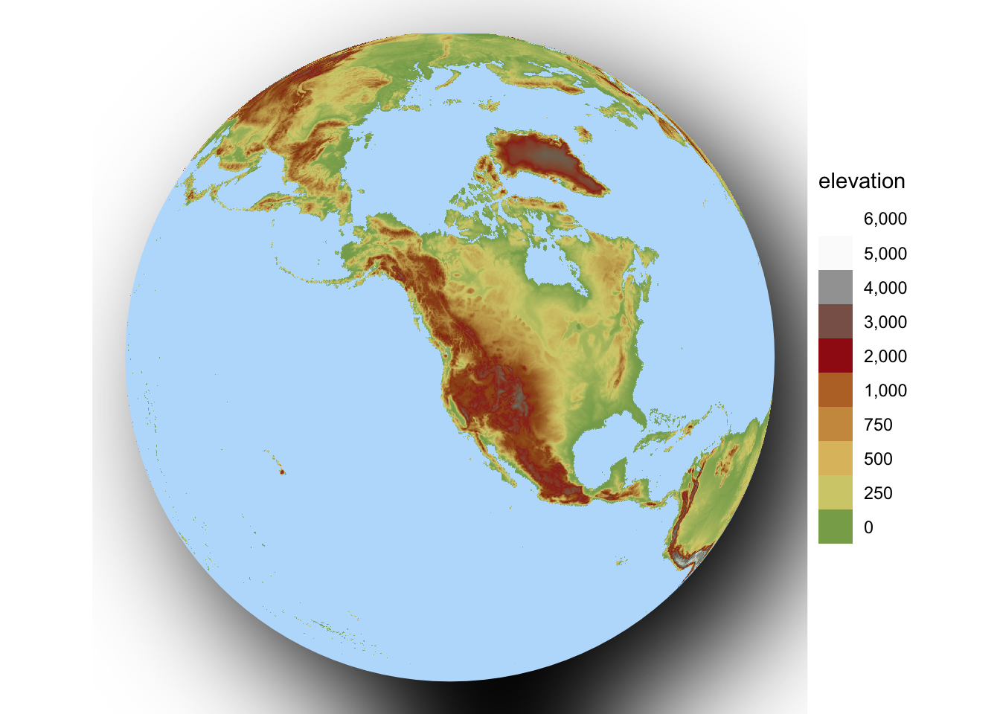
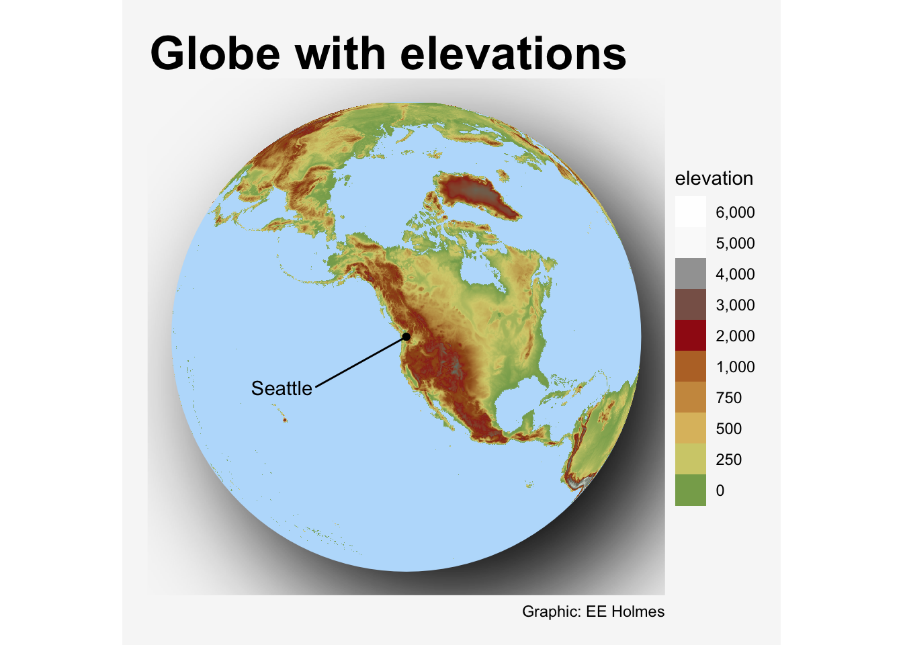
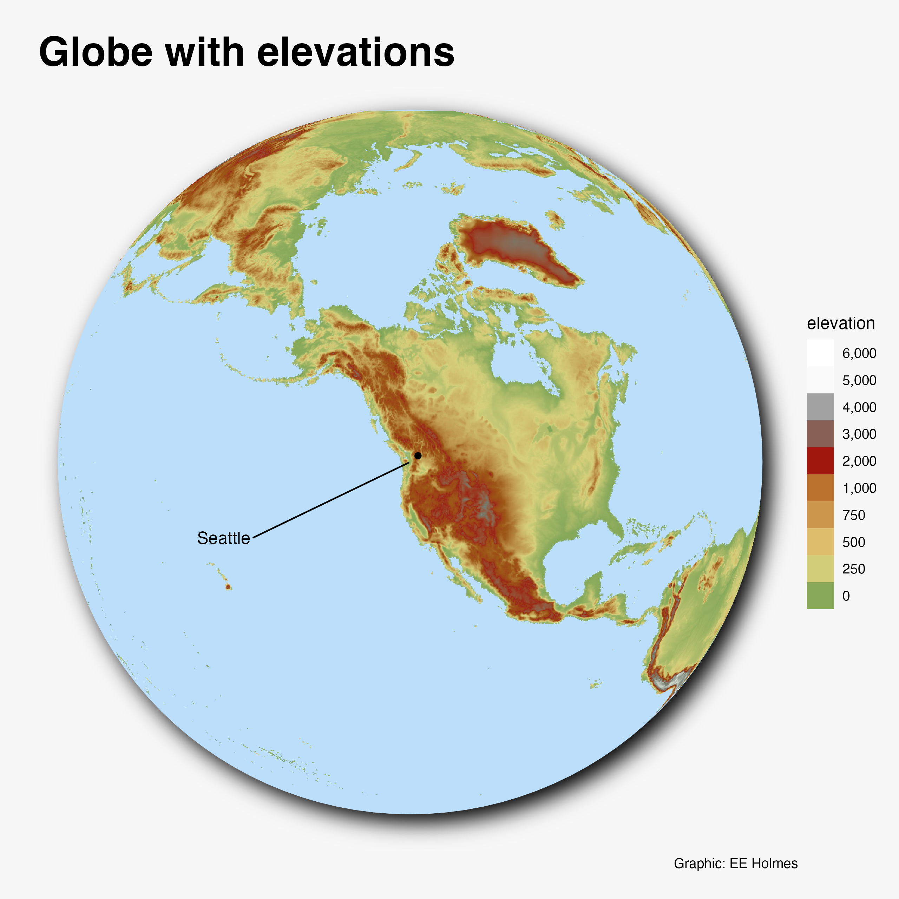

library(tidyverse)
library(sf)Day 19 globe
Code source inspriation
- https://twitter.com/ryanahart/status/1593966022553489410
- https://twitter.com/dhernangomez/status/1591710364571504640
- https://twitter.com/geokaramanis/status/1593999504323317760
- https://github.com/curatedmess/30DayMapChallenge/blob/main/2022/11192022/qatar.R
Code to download the data
The basic libraries
Get the Seattle lat/lon
Code
# Center
city_coords <- tibble(address = "Seattle, Washington") |>
tidygeocoder::geocode(address, method = 'osm', long = long, lat = lat)
long <- city_coords$long[1]
lat <- city_coords$lat[1]
crs2 <- 6384 # https://epsg.io/6384
coord_center <-
tibble(long, lat) %>%
sf::st_as_sf(coords = c("long", "lat"), crs = 4326)Set the projection. Had to futz a bit to get something that was close and didn’t throw an error w ggplot.
crs_string <- paste0("+proj=ortho +lat_0=", lat, " +lon_0=", long)
# crs_string <- "+proj=ortho +lat_0=45 +lon_0=-105"Get US elevations and define hill shading. This will be spatraster and comes with a projection which you can check with terra::crs(). We don’t need to change that; just need to know that it is specified.
Code
library(tidyterra) # for geom_spatraster
library(geodata)
library(scales)
r <- geodata::elevation_global(res=10, path = tempdir())
names(r) <- "alt"
slope <- terra::terrain(r, "slope", unit = "radians")
aspect <- terra::terrain(r, "aspect", unit = "radians")
hill <- terra::shade(slope, aspect, 30, 270)
# give the hill shading a name so I can refer to it in aes()
names(hill) <- "shades"Create a blue globe that will represent the ocean. 637100 is the radius of the earth in meters.
Code
# these are sf functions
ocean <- st_point(x = c(0,0)) %>%
st_buffer(dist = 6371000) %>%
st_sfc(crs = crs_string)Plot code
Create my globe. The palette “dem_poster” comes from tidyterra package.
Code
library(ggfx) # for with_shadow
p1 <- ggplot() +
with_shadow(geom_sf(data = ocean, fill = "#BBDEFB", color = NA), sigma = 30, x_offset = 25, y_offset = 25, color = "#58595d") +
geom_spatraster(data = hill, aes(fill=shades), maxcell = Inf) +
geom_spatraster(data=r, maxcell = Inf) +
scale_fill_hypso_tint_c(limits = as.vector(minmax(r)),
palette = "dem_poster",
alpha =0.8,
labels = scales::label_comma(),
breaks = c(seq(0,1000, 250), seq(2000, 6000, 1000))) +
guides(fill=guide_legend(title = "elevation", reverse = TRUE)) +
coord_sf(crs = crs_string) +
theme_void()
p1
Then add some annotation. The x and y units are in meters, so the nudge has to be huge (millions).
Code
library("ggrepel")
p2 <- p1 + geom_sf(data=coord_center) +
geom_text_repel(data = coord_center, aes(x=st_coordinates(coord_center)[1], y=st_coordinates(coord_center)[2]), label="Seattle",
nudge_x = -3371000, nudge_y = -1371000) +
labs(
title = "Globe with elevations",
caption = "Graphic: EE Holmes"
) +
theme(
plot.background = element_rect(fill = "grey97", color = NA),
plot.margin = unit(c(.5,.5,.5,.5), "cm"),
plot.title = element_text(hjust = 0.045, size = 26, face = "bold")
)
p2
Swap out that square background with one with rounded corners. Well this didn’t really work since I couldn’t figure out how to save.
Code
library(grid)
g <- ggplotGrob(p2)
bg <- g$grobs[[1]]
round_bg <- roundrectGrob(x=bg$x, y=bg$y, width=bg$width, height=bg$height,
r=unit(0.1, "snpc"),
just=bg$just, name=bg$name, gp=bg$gp, vp=bg$vp)
g$grobs[[1]] <- round_bg
grid.draw(g)For some reason the shadowing looks wrong in the html. Looks like this in the saved image:
knitr::include_graphics(here::here("content", "globe_elevation.png"))
Save image
ggsave(paste0("globe_elevation", ".png"), dpi = 320, width = 8, height = 8)